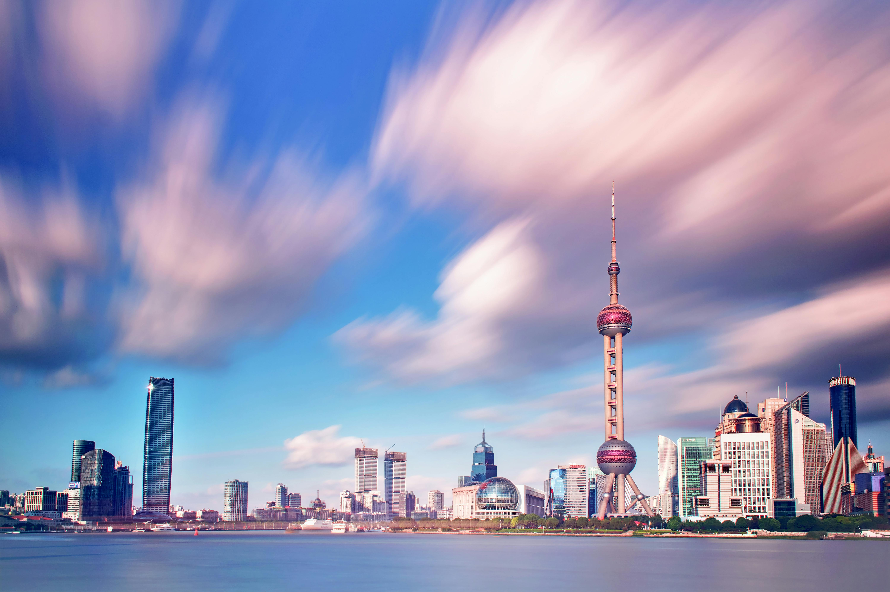

Night View of Spectacular Giant Ferris Wheel
Beneath a velvet sky, the giant Ferris wheel glows with dazzling colors, spinning like a crown of light. Each cabin sparkles as it rises, offering sweeping views of the city’s twinkling skyline. Reflections ripple below, mirroring the magic of motion and midnight wonder.

Zhangjiajie Skyline Framed by Ancient Architecture
Zhangjiajie’s skyline rises like a dreamscape of misty sandstone peaks, framed by the intricate stilted houses of the Tujia people. The ancient architecture, with its curved roofs and wooden balconies, adds a timeless rhythm to the surreal vertical spires. As dusk settles, golden lights flicker across the 72 Strange Buildings, casting a magical glow over this fusion of nature and heritage

Long Exposure Photography of Buildings
Long exposure photography of buildings transforms static architecture into ethereal art, blurring skies and light trails around crisp structural lines. With slow shutter speeds, motion becomes a soft veil—clouds streak, lights dance—while the building stands timeless and sharp. This technique reveals the contrast between permanence and motion, turning urban scenes into surreal compositions.

Modern Urban Train Passing Through Cityscape
A sleek urban train glides along elevated tracks, threading through a maze of glass towers and bustling streets. Its rhythmic motion mirrors the heartbeat of the city, where architecture and transit dance in perfect sync. As neon lights flicker and reflections shimmer, the train becomes a symbol of modern momentum.